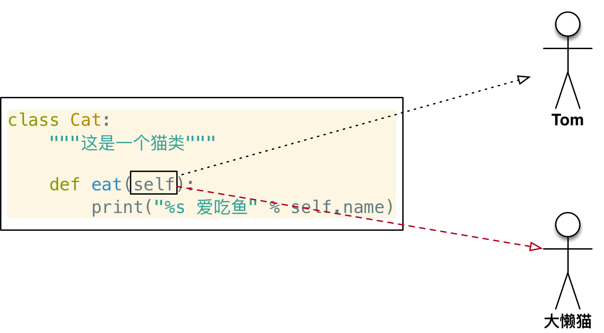

面相对象基础语法
目标
dir内置函数- 定义简单的类（只包含方法）
- 方法中的
self参数 - 初始化方法
- 内置方法和属性
01. dir 内置函数（知道）
- 在
Python中 对象几乎是无所不在的，我们之前学习的 变量、数据、函数 都是对象
在 Python 中可以使用以下两个方法验证：
- 在 标识符 / 数据 后输入一个
.，然后按下TAB键，iPython会提示该对象能够调用的 方法列表 - 使用内置函数
dir传入 标识符 / 数据，可以查看对象内的 所有属性及方法
提示 __方法名__ 格式的方法是 Python 提供的 内置方法 / 属性，稍后会给大家介绍一些常用的 内置方法 / 属性
| 序号 | 方法名 | 类型 | 作用 |
|---|---|---|---|
| 01 | __new__ |
方法 | 创建对象时，会被 自动 调用 |
| 02 | __init__ |
方法 | 对象被初始化时，会被 自动 调用 |
| 03 | __del__ |
方法 | 对象被从内存中销毁前，会被 自动 调用 |
| 04 | __str__ |
方法 | 返回对象的描述信息，print 函数输出使用 |
提示 利用好 dir() 函数，在学习时很多内容就不需要死记硬背了
02. 定义简单的类（只包含方法）
面向对象 是 更大 的 封装，在 一个类中 封装 多个方法，这样 通过这个类创建出来的对象，就可以直接调用这些方法了！
2.1 定义只包含方法的类
- 在
Python中要定义一个只包含方法的类，语法格式如下：
1 | class 类名: |
- 方法 的定义格式和之前学习过的函数 几乎一样
- 区别在于第一个参数必须是
self，大家暂时先记住，稍后介绍self
注意：类名 的 命名规则 要符合 大驼峰命名法
2.3 第一个面向对象程序
需求
- 小猫 爱 吃 鱼，小猫 要 喝 水
分析
- 定义一个猫类
Cat - 定义两个方法
eat和drink - 按照需求 —— 不需要定义属性
1 | class Cat: |
引用概念的强调
在面向对象开发中，引用的概念是同样适用的！
- 在
Python中使用类 创建对象之后，tom变量中 仍然记录的是 对象在内存中的地址 - 也就是
tom变量 引用 了 新建的猫对象 - 使用
print输出 对象变量，默认情况下，是能够输出这个变量 引用的对象 是 由哪一个类创建的对象，以及 在内存中的地址（十六进制表示）
提示：在计算机中，通常使用 十六进制 表示 内存地址
- 十进制 和 十六进制 都是用来表达数字的，只是表示的方式不一样
- 十进制 和 十六进制 的数字之间可以来回转换
%d可以以 10 进制 输出数字%x可以以 16 进制 输出数字
案例进阶 —— 使用 Cat 类再创建一个对象
1 | lazy_cat = Cat() |
提问：
tom和lazy_cat是同一个对象吗？
03. 方法中的 self 参数
3.1 案例改造 —— 给对象增加属性
在Python中，要给对象设置属性，非常的容易，但是不推荐使用
- 因为：对象属性的封装应该封装在类的内部
只需要在 类的外部的代码 中直接通过
.设置一个属性即可
注意：这种方式虽然简单，但是不推荐使用！
1 | tom.name = "Tom" |
3.2 使用 self 在方法内部输出每一只猫的名字
由 哪一个对象 调用的方法，方法内的
self就是 哪一个对象的引用
- 在类封装的方法内部，
self就表示 当前调用方法的对象自己 - 调用方法时，程序员不需要传递
self参数 - 在方法内部
- 可以通过
self.访问对象的属性 - 也可以通过
self.调用其他的对象方法
- 可以通过
- 改造代码如下：
1 | class Cat: |

- 在 类的外部，通过
变量名.访问对象的 属性和方法 - 在 类封装的方法中，通过
self.访问对象的 属性和方法
04. 初始化方法
4.1 之前代码存在的问题 —— 在类的外部给对象增加属性
- 将案例代码进行调整，先调用方法 再设置属性，观察一下执行效果
1 | tom = Cat() |
- 程序执行报错如下：
1 | AttributeError: 'Cat' object has no attribute 'name' |
提示
- 在日常开发中，不推荐在类的外部给对象增加属性
- 如果在运行时，没有找到属性，程序会报错
- 对象应该包含有哪些属性，应该 封装在类的内部
4.2 初始化方法
当使用类名()创建对象时，会自动执行以下操作：
- 为对象在内存中 分配空间 —— 创建对象
- 为对象的属性 设置初始值 —— 初始化方法(
init)
这个 初始化方法 就是
__init__方法，__init__是对象的内置方法
__init__方法是 专门 用来定义一个类 具有哪些属性的方法！
在 Cat 中增加 __init__ 方法，验证该方法在创建对象时会被自动调用
1 | class Cat: |
4.3 在初始化方法内部定义属性
- 在
__init__方法内部使用self.属性名 = 属性的初始值就可以 定义属性 - 定义属性之后，再使用
Cat类创建的对象，都会拥有该属性
1 | class Cat: |
4.4 改造初始化方法 —— 初始化的同时设置初始值
- 在开发中，如果希望在创建对象的同时，就设置对象的属性，可以对
__init__方法进行改造- 把希望设置的属性值，定义成
__init__方法的参数 - 在方法内部使用
self.属性 = 形参接收外部传递的参数 - 在创建对象时，使用
类名(属性1, 属性2...)调用
- 把希望设置的属性值，定义成
1 | class Cat: |
05. 内置方法和属性
| 序号 | 方法名 | 类型 | 作用 |
|---|---|---|---|
| 01 | __del__ |
方法 | 对象被从内存中销毁前，会被 自动 调用 |
| 02 | __str__ |
方法 | 返回对象的描述信息，print 函数输出使用 |
5.1 __del__ 方法（知道）
- 在
Python中- 当使用
类名()创建对象时，为对象 分配完空间后，自动 调用__init__方法 - 当一个 对象被从内存中销毁 前，会 自动 调用
__del__方法
- 当使用
- 应用场景
__init__改造初始化方法，可以让创建对象更加灵活__del__如果希望在对象被销毁前，再做一些事情，可以考虑一下__del__方法
- 生命周期
- 一个对象从调用
类名()创建，生命周期开始 - 一个对象的
__del__方法一旦被调用，生命周期结束 - 在对象的生命周期内，可以访问对象属性，或者让对象调用方法
- 一个对象从调用
1 | class Cat: |
5.2 __str__ 方法
- 在
Python中，使用print输出 对象变量，默认情况下，会输出这个变量 引用的对象 是 由哪一个类创建的对象，以及 在内存中的地址（十六进制表示） - 如果在开发中，希望使用
print输出 对象变量 时，能够打印 自定义的内容，就可以利用__str__这个内置方法了
注意：
__str__方法必须返回一个字符串
1 | class Cat: |